You can change this later by running the installer again. Your preferences and layouts are left alone.
Do not close this window until it finishes.
The programs and their shortcuts are removed. Only what this installer put there is deleted.